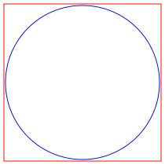

.
Modelica
.
Thermal
.
FluidHeatFlow
.
Interfaces
Information
This package contains connectors and partial models:
FlowPort: basic definition of the connector.
FlowPort_a & FlowPort_b: same as FlowPort with different icons to differentiate direction of flow
package Partials (defining basic thermodynamic equations)
Contents
Name
Description
FlowPort
Connector flow port
FlowPort_a
Filled flow port (used upstream)

FlowPort_b
Hollow flow port (used downstream)
Partials
Partial models
Generated at 2018-12-17T10:58:42Z by
OpenModelica 1.14.0~dev-43-g4ff0ebd